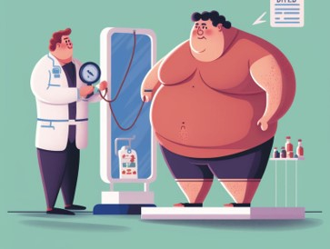
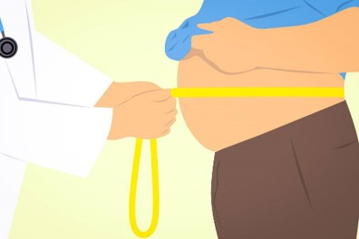
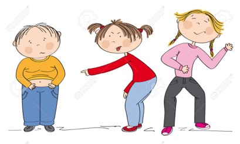
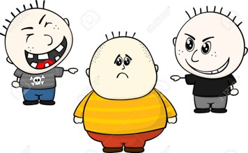

1: Consulta a un profesional de la salud: Antes de comenzar cualquier plan de pérdida de peso, es importante hablar con un médico o un nutricionista para obtener orientación personalizada y asegurarte de que estás siguiendo un plan seguro y efectivo.
2: Establece metas realistas: Es importante ser realista con tus metas de pérdida de peso. Establece objetivos alcanzables y a corto plazo para mantener la motivación y seguir avanzando hacia una mejor salud.
3: Apunta a un enfoque equilibrado: En lugar de seguir dietas extremadamente restrictivas, enfócate en una alimentación balanceada que incluya una variedad de alimentos saludables como frutas, verduras, proteínas magras y granos enteros.
4: Mantén la actividad física: Incorpora la actividad física regular en tu rutina diaria para ayudar a quemar calorías, fortalecer tus músculos y mejorar tu salud en general. Busca actividades que disfrutes y que puedas mantener a largo plazo.
5: Controla tus porciones: Aprende a controlar tus porciones y a evitar comer en exceso. Presta atención a tus señales de hambre y saciedad, y trata de comer lentamente para darle tiempo a tu cuerpo para sentirse satisfecho.


Consejos contra el bullying
Comunica lo que está sucediendo: Habla con un adulto de confianza, como un maestro, consejero escolar, padre o tutor, sobre lo que estás experimentando. No tengas miedo de pedir ayuda y contar tu situación.
No te quedes solo: Trata de rodearte de amigos y personas que te apoyen. Pueden ayudarte a sentirte más seguro y protegido frente al acoso.
Mantén la calma: Trata de mantener la compostura y responder al acoso de manera tranquila y asertiva. Evita responder con violencia o agresión, ya que esto puede empeorar la situación.
Ignora al acosador: A veces, ignorar al acosador y no reaccionar puede desalentar su comportamiento. Hazlo si puedes, pero no dudes en buscar ayuda si la situación se vuelve demasiado difícil de manejar.
Conoce tus derechos: Infórmate sobre las políticas y procedimientos contra el acoso en tu escuela o comunidad. Todos tienen derecho a sentirse seguros y protegidos, y es importante que conozcas tus derechos, Practica el autocuidado: Tómate tiempo para ti mismo para hacer tus ejercicios, la alimentación es fundamental también, lo importante es que estés bien en lo emocional y mental.


Fortaleciendo la motivación
Establece metas realistas y específicas: Define claramente tus objetivos de fitness, ya sea perder peso, aumentar la fuerza, mejorar tu resistencia o simplemente mantenerte en forma. Asegúrate de que tus metas sean alcanzables y establece plazos para alcanzarlas.
en esta pagina encontraras las mejores actividades físicas que te gustan y te hacen sentir bien. Puede ser también correr, nadar, hacer yoga, levantar pesas, bailar, etc. La clave es encontrar algo que te motive a mantenerte activo regularmente.
Encuentra un compañero de entrenamiento: Tener un compañero de entrenamiento puede ser muy motivador y te ayudará a mantenerte responsable y comprometido con tus metas de fitness. Pueden ayudarse mutuamente a mantener la motivación y disfrutar del ejercicio juntos.
debes también Establecer un plan de seguimiento: Lleva un registro de tus entrenamientos, tu progreso y tus logros. Esto te ayudará a mantener la motivación y ver cómo estás avanzando hacia tus objetivos.
y lo mas importante Celebra tus logros Reconoce y celebra tus logros, por pequeños que sean. Cada paso hacia adelante es importante y merece ser celebrado. Premiarte a ti mismo por tu dedicación y esfuerzo te ayudará a mantenerte motivado a largo plazo.